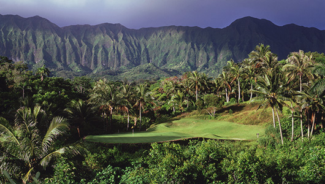
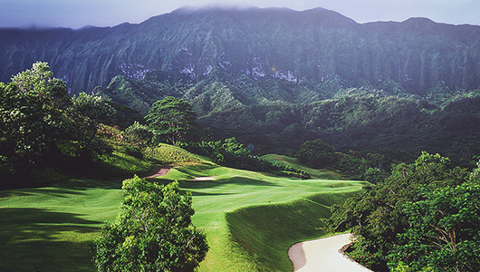

도심을 벗어나 하와이 절경을 느낄 수 있는 하와이에서 가장 아름다운 골프 클럽
클린턴, 오바마 대통령이 즐겨 찾는 코스
도심을 벗어나 하와이 절경을 느낄 수 있는 로열 하와이언 골프 클럽은 오아후의 코올라우 산을 배경으로 깎아지르는 마우나윌리 골짜기에 조성된 골프 코스로, 높이 30m 이상의 장대한 원시림과 깊은 정글이 남성미 자아내며 하와이에서 가장 아름다운 골프 클럽이라 불린다.

1993년 개장 당시의 코스는 페리 다이와 피트 다이의 작품이었으나, 최근 ‘골프계의 전설’ 그레그 노먼이 코스를 디자인 된 로열 하와이언 골프 클럽은 페어웨이를 따라 우거진 로열 팜 나무와 바나나 나무, 코코아나무 숲이 다양한 하와이안 어종들로 가득한 개울과 어울려 골프장의 이국적인 이미지를 극대화 하는 한편, 곳곳에 숨어있는 벙커와 업앤 다운이 심한 난코스로 골퍼들의 도전정신을 불러일으키는 코스로 유명하다.

4,180sqm의 엄청난 규모를 자랑하는 클럽하우스에서 수준 높은 식음료 서비스와 함께 라이브 음악 공연을 선보이기도 하며, 사우나 시설을 갖추고 있어 라운드 후 피로를 덜어주기에 충분하다.
Travel Tip
영화 쥐라기 월드, 진주만, 고질라 등 유명한 할리우드 영화의 촬영지였던 쿠알로아 랜치, 하와이의 상징이라 할 수 있는 와이키키 해변 등 하와이의 다양한 매력을 느낄 수 있는 명소들이 차량으로 30분이면 닿을 수 있어 영화를 보며 느꼈던 감정들을 되새기며 또 하나의 추억을 만들 수 있다.